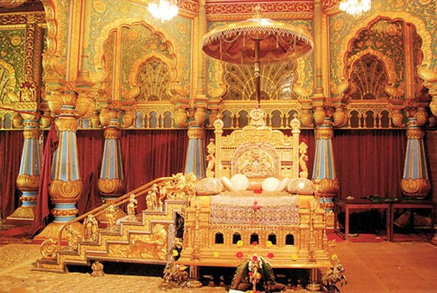

The Mysore Palace, once the residence of the Wodeyars, is one of the largest palaces of its kind in India, and one of the most splendid. Built in Indo-Saracenic style with domes, turrets, arches and colonnades, the Palace is often compared with the Buckingham Palace of Britain because of its grandeur. Henry Irwin, the British consultant architect of Madras state, designed it. The palace was built by the twenty-fourth Wodeyar Raja in 1912 on the site of the old wooden palace that was gutted in the year 1897.
The palace has now been converted into a museum, which treasures the souvenirs, paintings, jewellery, royal costumes and other items, which were once possessed by the Wodeyars. It is said that the palace displays the largest collection of gold items, quantity wise.
The Golden Royal Elephant Throne, the Durbar Hall, and the Kalyan Mandap (wedding hall) are the main attractions here. The entry to the palace is through a beautiful gallery featuring Indian and European sculpture and ceremonial objects.

Halfway along is the Elephant Gate, which is the main entrance to the center of the palace. The gate is decorated with floriated designs, and bears the Mysore royal symbol of a double-headed eagle. To the north of the gate the Royal Elephant Throne is displayed which is embellished with 84 kilogram of 24-carat gold.
Walls leading to the Kalyan Mandap are lined with intricate oil paintings, illustrating the royal procession of the Mysore Dussehra Festival. A unique thing about these paintings is that seen from any direction, the procession seems to be coming in one's own direction. The hall itself is magnificent and is decorated with huge chandeliers, and multicoloured stain glass arranged in peacock designs. The historic Durbar Hall of the palace has an ornate ceiling and sculpted pillars which are said to have been painted with gold. It is also a treasure house of rare paintings by some celebrated artists. This hall, which is up the stairs, offers wonderful view of the Chamundi Hills that towers over the city and houses a temple dedicated to the Goddess Chamundeshwari, the royal family's patron deity.
The palace looks even more grand and beautiful on Sunday evenings and on festivals when it is illuminated with thousands of light bulbs.